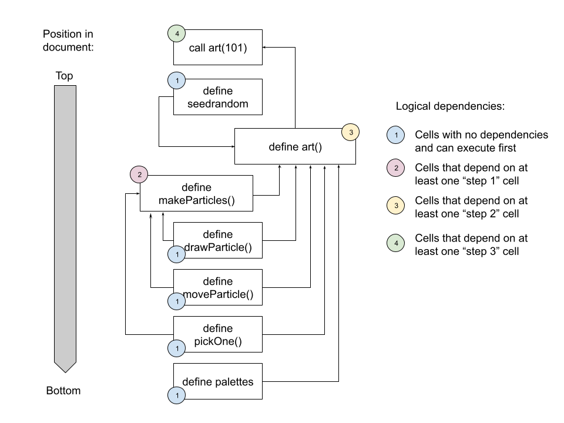

![]()
```{ojs}
//| echo: fenced
1 + 1
```About this time last year I wrote a little blog post about my first attempts to make generative art in javascript with p5.js. Because I was using this quarto-based blog as the vehicle for that exploration, and because quarto supports observable.js as a method for javascript-based computational notebooks – which is slightly different to embedding a js script in a regular webpage – I also talked a little bit about observable. To be honest though I didn’t talk about it very much: at the time I was focused mostly on p5.js, and didn’t really think too much about how observable works.
Lately, though, I’ve been making a few new generative art systems in javascript. The advent and pastiche series’ I posted to my art site were both written in javascript. In both cases I used node.js to run the js code locally, calling the scripts from the terminal rather than running them in a browser context.
Making art with javascript has been quite a lot of fun, and since it’s been on my mind lately, I thought it might be time to it prompted me take another look at observable in this post. I’m not planning a deep dive or anything, but I will talk a little bit about little art system I made that makes dynamic pieces like this one:
art(100)What is observable, and what’s it doing in quarto?
At its heart, observable.js provides a method for creating computational notebooks that execute javascript code in the context of a document containing regular text, in much the same way that jupyter notebooks execute code cells that contain R, Python, or Julia code, and allow the author to interleave regular text with the code.
I’ll talk more about the code execution and the structure of observable notebooks first, but it helps to start by making a clear distinction between the code execution engine that powers observable notebooks, and the hosted service that most people use when creating one. To see what I mean, notice that most of the time when someone wants to create an observable notebook, they use the hosted service provided by the company which – somewhat confusingly – is also called observable.1 For example, here is a notebook by Allison Horst: it uses the observable javascript library, and it’s hosted on observable service provided by observable-the-company. When people talk about “observable notebooks”, this is the kind of thing they usually mean.
However, this isn’t the only possible approach. You could, for instance, include the observable.js core libraries in a regular webpage (i.e., using the javascript libraries but not the hosted service). Alternatively – and this is the approach I’m taking here – you can create quarto documents that rely on observable to execute javascript code, which is fairly painless to do because quarto provides native support for observable.js. To create an observable-javascript code chunk (“code cell”, in the terminology used by observable), you’d create an {ojs} chunk like this:
Here you can see the javascript code (1 + 1), the output (2), and the quarto syntax used to create the chunk itself (the {ojs} bit), but from now on I’ll drop the quarto syntax.2 The important thing to realise here is that although superficially this page looks rather different to a notebook on the observable hosted service, the underlying “execution engine” is more or less the same.
Code cells execute in logical order
For the most part, the code execution within an observable notebook (or a quarto document like this one that uses observable) follows all the usual syntax for vanilla javascript. You can use a cell to define variables:
msg = "hello world"and you can refer to those variables later:
msgHowever, a key characteristic to observable.js is its reactive runtime engine: much like a spreadsheet, cells are executed in “topological order” based on the logical dependencies among them. For example, the cell below refers to a variable called surprise, and it works even though (reading this document from top to bottom) I haven’t actually defined it yet:
surpriseThis works because, at a later point in this document, there is a code cell that does specify a value for surprise, and observable.js detects that the later cell is the logical precursor to the one above, and executes that cell before this one. It is also the reason why I can call the art() function in the code cell below. Because the art() function is defined later in the document, I’m permitted to call it now, knowing that observable will determine the order in which all the cells need to be executed:
art(101)To unpack this still further, the image below shows all the dependencies of the call to art(101) that occurs in the cell above. As you can see, all of the cells upon which the cell above depends appear lower in the document, but that’s okay, because observable.js uses the logical dependencies (which take the form of a directed acyclic graph) among these cells to determine the order in which they execute:

Designing the art system
seedrandom = require('seedrandom@3.0.5')function* art(seed) {
// setup
const par = {height: 600, width: 900, nrow: 12, ncol: 18}
const rng = seedrandom(seed)
const ctx = DOM.context2d(par.width, par.height)
const pal = pickOne(palettes, rng)
// image
ctx.fillStyle = pickOne(pal, rng)
ctx.fillRect(0, 0, par.width, par.height)
let particles = makeParticles(par, pal, rng)
while (true) {
particles.map(p => {p.draw(ctx); p.move(rng)})
yield ctx.canvas
}
}function makeParticles(par, pal, rng) {
const rowheight = par.height / par.nrow
const colwidth = par.width / par.ncol
const s = Math.min(rowheight, colwidth) * .5
let particles = []
let k = 0
for (let c = 0; c < (par.ncol - 1); c++) {
for (let r = 0; r < (par.nrow - 1); r++) {
particles[k] = {
id: k,
col: c,
row: r,
size: 1 + (s - 1) * rng.double(),
sizemin: 1,
sizemax: s,
width: 3,
x: colwidth * (c + 1),
y: rowheight * (r + 1),
xmax: par.width,
ymax: par.height,
xstep: .3,
ystep: .3,
start: Math.PI * 2 * rng.double(),
length: Math.PI * rng.double(),
turn: .1,
shade: pickOne(pal, rng),
shrink: .005,
draw: function(ctx) {drawParticle(this, ctx)},
move: function(rng) {moveParticle(this, rng)}
}
k++
}
}
return particles
}function drawParticle(p, ctx) {
ctx.fillStyle = p.shade
ctx.strokeStyle = p.shade
ctx.lineWidth = p.width
ctx.beginPath()
ctx.arc(p.x, p.y, p.size, p.start, p.start + p.length)
ctx.fill()
ctx.stroke()
ctx.closePath()
}function moveParticle(p, rng) {
p.y = p.y + p.ystep * (rng.double() - .5) * p.size
p.x = p.x + p.xstep * (rng.double() - .5) * p.size
if (p.y > p.ymax) p.y = p.y - p.ymax
if (p.x > p.xmax) p.x = p.x - p.xmax
if (p.y < 0) p.y = p.ymax - p.y
if (p.x < 0) p.x = p.xmax - p.x
if (p.size > p.sizemin) {
p.size = p.size - p.shrink * (p.sizemax - p.sizemin)
} else {
p.size = p.sizemax
}
p.start = p.start + p.turn * (Math.PI * 2 * (rng.double() - .5))
}function pickOne(items, rng) {
return items[Math.floor(rng.double()*items.length)]
}palettes = [
["#de9151", "#f34213", "#2e2e3a", "#bc5d2e", "#bbb8b2"],
["#a63446", "#fbfef9", "#0c6291", "#000004", "#7e1946"],
["#ffffff", "#ffcad4", "#b0d0d3", "#c08497", "#f7af9d"],
["#aa8f66", "#ed9b40", "#ffeedb", "#61c9a8", "#ba3b46"],
["#241023", "#6b0504", "#a3320b", "#d5e68d", "#47a025"],
["#64113f", "#de4d86", "#f29ca3", "#f7cacd", "#84e6f8"],
["#660000", "#990033", "#5f021f", "#8c001a", "#ff9000"],
["#c9cba3", "#ffe1a8", "#e26d5c", "#723d46", "#472d30"],
["#0e7c7b", "#17bebb", "#d4f4dd", "#d62246", "#4b1d3f"],
["#0a0908", "#49111c", "#f2f4f3", "#a9927d", "#5e503f"],
["#020202", "#0d324d", "#7f5a83", "#a188a6", "#9da2ab"],
["#c2c1c2", "#42213d", "#683257", "#bd4089", "#f51aa4"],
["#820263", "#d90368", "#eadeda", "#2e294e", "#ffd400"],
["#f4e409", "#eeba0b", "#c36f09", "#a63c06", "#710000"],
["#d9d0de", "#bc8da0", "#a04668", "#ab4967", "#0c1713"],
["#012622", "#003b36", "#ece5f0", "#e98a15", "#59114d"],
["#3c1518", "#69140e", "#a44200", "#d58936", "#fffb46"],
["#6e0d25", "#ffffb3", "#dcab6b", "#774e24", "#6a381f"],
["#bcabae", "#0f0f0f", "#2d2e2e", "#716969", "#fbfbfb"],
["#2b4162", "#385f71", "#f5f0f6", "#d7b377", "#8f754f"]
]art(102)surprise = "a variable defined at the bottom of the document"Footnotes
I realise it’s a small gripe, but I do think it’s a problem when companies create this confusion by conflating the organisation with the product and/or service. For many years it was difficult to distinguish between rstudio-the-company and rstudio-the-IDE. Observable makes this confusion even messier, since we have observable-the-company, observable-the-javascript-library, and observable-the-hosting-service. They’re three different things that all have the same name and it’s a pain to write about.↩︎
This is a little different than what would have happened if I’d used
{js}rather than{ojs}: when you use{js}in quarto, the javascript code is embedded as a script within the html page, rather than executed with observable.js↩︎
Reuse
Citation
BibTeX citation:
@online{navarro2024,
author = {Navarro, Danielle},
title = {Generative Art in Observable.js},
date = {2024-01-06},
url = {https://blog.djnavarro.net/posts/2024-01-06_javascript-art},
langid = {en}
}
For attribution, please cite this work as: